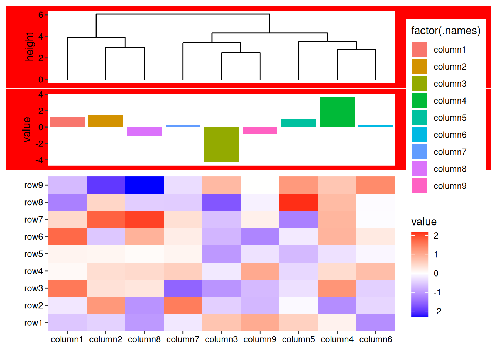
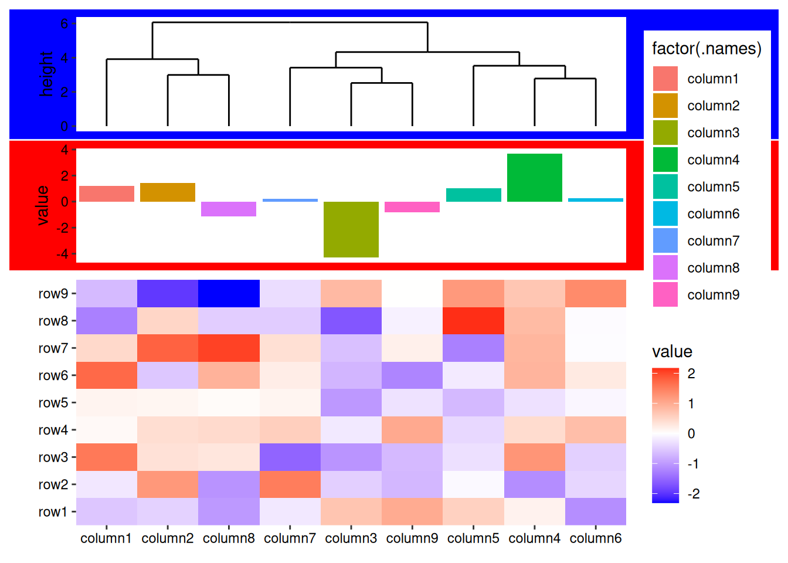
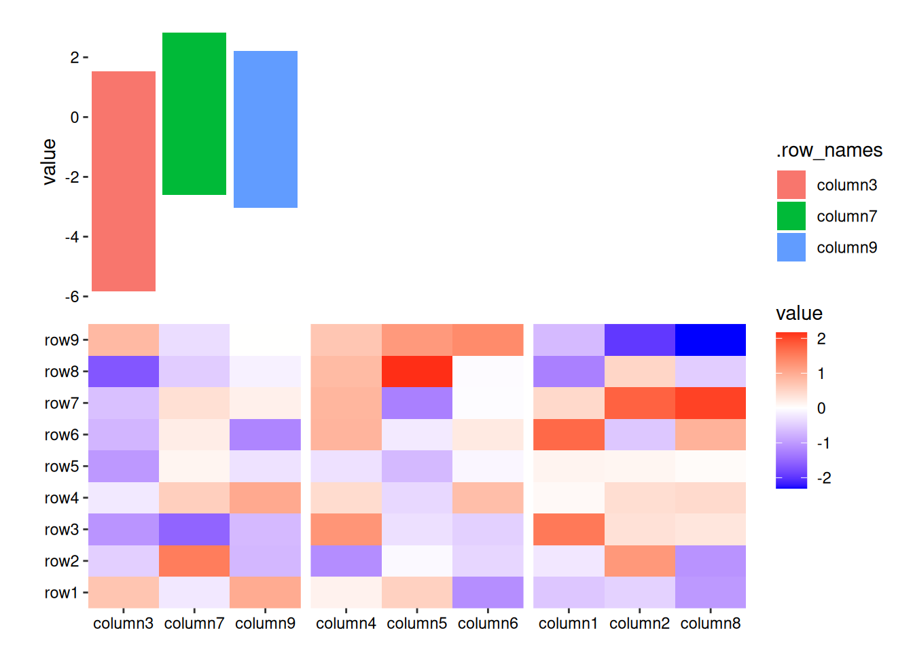
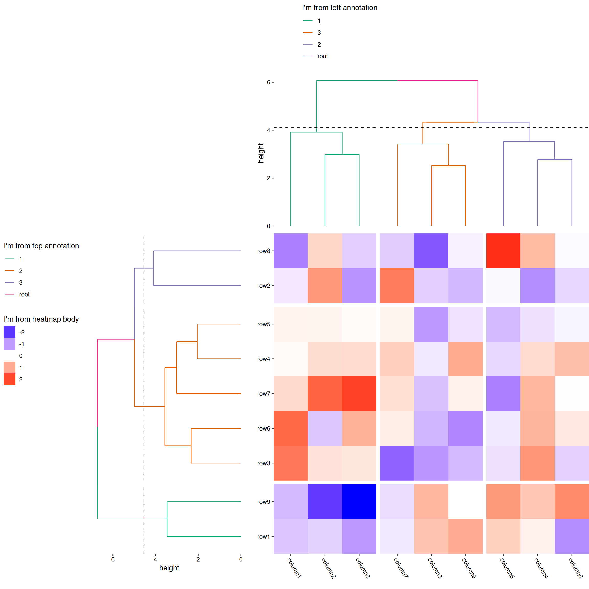
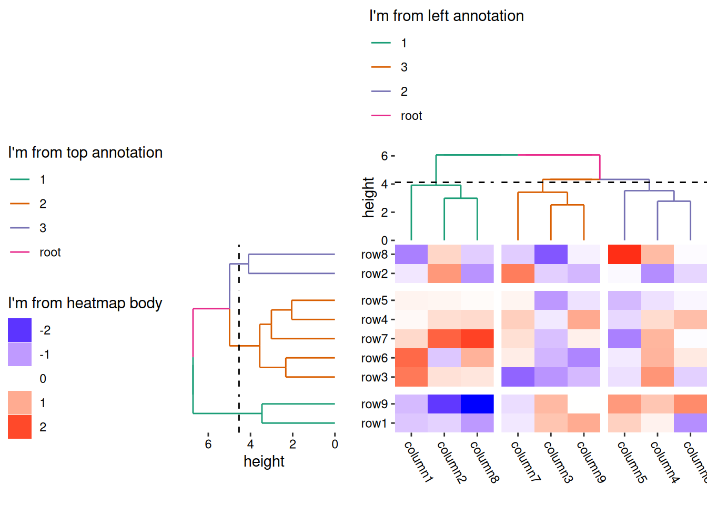
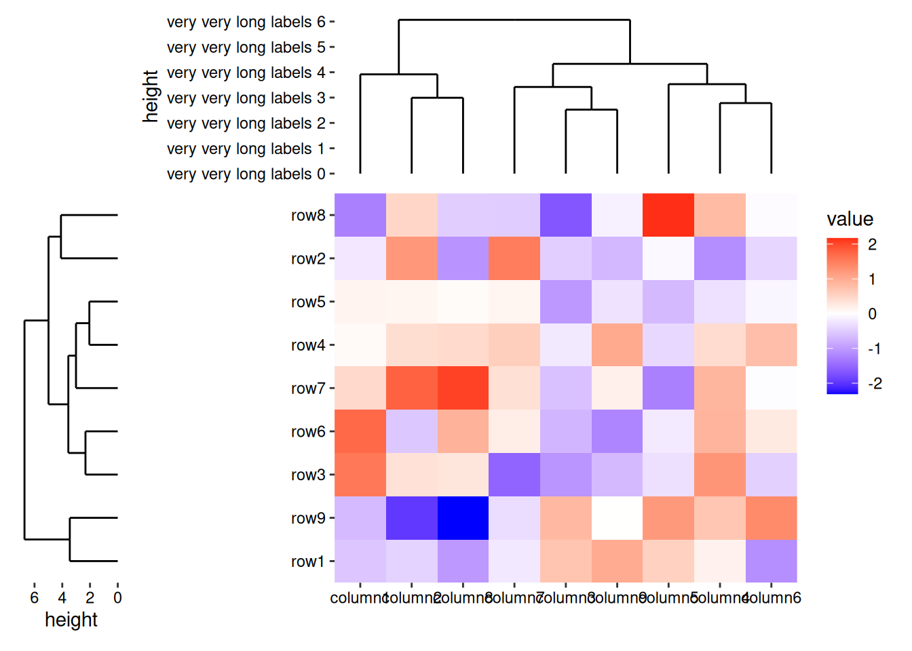

library(ggalign)
#> Loading required package: ggplot2
#>
#> Attaching package: 'ggalign'
#> The following object is masked from 'package:ggplot2':
#>
#> element_polygon12 Schemes
Schemes control the actions of plots within the layout and can be applied either globally to the layout or individually to specific plots.
- To apply a scheme to a single plot, use the
+operator. - To set a scheme at the layout level, use the
-operator. Scheme set at the layout level will be inherited by all plots when rendering the layout.
scheme inherit properties from parent layout hierarchically.
The package currently provides three schemes, each prefixed with scheme_:
scheme_theme: Sets the default theme for the plot.scheme_data: Transforms the plot data. Many functions in this package require a specific data format to align observations,scheme_data()helps reformat data frames as needed.scheme_align: Defines alignment specifications for plots within the layout.
set.seed(123)
small_mat <- matrix(rnorm(81), nrow = 9)
rownames(small_mat) <- paste0("row", seq_len(nrow(small_mat)))
colnames(small_mat) <- paste0("column", seq_len(ncol(small_mat)))12.1 scheme_theme()
The scheme_theme() function extends theme() to set a default theme for plots, allowing you to input theme() elements directly or add the theme elements.
To set a scheme for a single plot, simply use the + operator:
ggheatmap(small_mat) +
scheme_theme(plot.background = element_rect(fill = "red"))
#> → heatmap built with `geom_tile()`- 1
- initialize a heatmap layout
- 2
- set the default theme, change the plot background for the main plot
You can use a theme() object directly in scheme_theme().
ggheatmap(small_mat, filling = FALSE) +
geom_tile(aes(fill = value), width = 0.9, height = 0.9) +
scheme_theme(theme_bw(), plot.background = element_rect(fill = "red"))Note that scheme_theme() serves as the default theme and will always be overridden by any theme() settings applied directly to the plot. The default theme (scheme_theme()) is applied first, followed by any specific theme() settings, even if theme() is added before scheme_theme().
ggheatmap(small_mat) +
# change the plot theme of the heatmap body
theme(plot.background = element_rect(fill = "blue")) +
# change the default theme of the heatmap body
scheme_theme(plot.background = element_rect(fill = "red"))
#> → heatmap built with `geom_tile()`By using the - operator with schemes, we apply the scheme directly to the active layout.
ggheatmap(small_mat) +
# Change the active layout to the top annotation
anno_top() +
# add a dendrogram to the top annotation
align_dendro() +
# add a bar plot to the top annotation
ggalign(aes(.discrete_x, value, fill = factor(.names)), data = rowSums) +
geom_bar(stat = "identity") -
# Change the default theme of the top annotation
# All plots in the top annotation will inherit this default theme
scheme_theme(plot.background = element_rect(fill = "red"))
#> → heatmap built with `geom_tile()`
Unlike individual ggplot2 elements, which will be added directly to each plot by - operator, layout-level schemes set by - operator are inherited by all plots in the layout when rendered. Any plot-specific schemes will override these layout-level schemes, regardless of the order in which they are added.
ggheatmap(small_mat) +
# Change the active layout to the top annotation
anno_top() +
# add a dendrogram to the top annotation
align_dendro() +
# change the scheme_theme for the dendrogram plot
scheme_theme(plot.background = element_rect(fill = "blue")) +
# add a bar plot to the top annotation
ggalign(aes(.discrete_x, value, fill = factor(.names)), data = rowSums) +
geom_bar(stat = "identity") -
# Change the default theme of the top annotation
# All plots in the top annotation will inherit this default theme
# But the plot-specific options will override these
scheme_theme(plot.background = element_rect(fill = "red"))
#> → heatmap built with `geom_tile()`
12.2 scheme_data()
ggalign() requires the specific data format for its operations. If you need to transform or filter data for individual geoms, you can use the data argument within each geom. However, if you have multiple geoms and want a consistent transformation applied across all, you can utilize the scheme_data() function. This allows you to transform the default data for the entire plot.
The scheme_data() accepts a function that takes a data frame as input and returns a modified data frame. By default, scheme_data() will attempt to inherit from the parent layout if the data is inherited from it. However, there is one exception: align_dendro() will not inherit scheme_data() transformations by default.
set.seed(1234L)
ggheatmap(small_mat) +
anno_top() +
align_kmeans(3L) +
# we add a bar plot
ggalign() +
# we subest the plot data
scheme_data(~ subset(.x, .panel == 1L)) +
geom_bar(aes(y = value, fill = .row_names), stat = "identity")
#> → heatmap built with `geom_tile()`
#> Warning in min(x): no non-missing arguments to min; returning Inf
#> Warning in max(x): no non-missing arguments to max; returning -Inf
#> Warning in min(d[d > tolerance]): no non-missing arguments to min; returning
#> Inf
#> Warning in min(x): no non-missing arguments to min; returning Inf
#> Warning in max(x): no non-missing arguments to max; returning -Inf
#> Warning in min(d[d > tolerance]): no non-missing arguments to min; returning
#> Inf
12.3 scheme_align()
The scheme_align() function controls the align specifications for plots.
12.3.1 guides
By default, ggheatmap() will collect all guide legends on the side from which they originate.
heatmap_collect_all_guides <- ggheatmap(small_mat, width = 2, height = 2L) +
# we set the legend to the left side
scale_fill_gradient2(
low = "blue", high = "red",
name = "I'm from heatmap body",
guide = guide_legend(position = "left")
) +
theme(axis.text.x = element_text(angle = -60, hjust = 0)) +
# we add a top annotation
anno_top() +
# in the top annotation, we add a dendrogram
align_dendro(aes(color = branch), k = 3L) +
# we set the legends of the dendrogram to the left side
scale_color_brewer(
name = "I'm from top annotation", palette = "Dark2",
guide = guide_legend(position = "left")
) +
# we add a left annotation
anno_left() +
align_dendro(aes(color = branch), k = 3L) +
# we set the legends of the dendrogram to the top side
scale_color_brewer(
name = "I'm from left annotation", palette = "Dark2",
guide = guide_legend(position = "top", direction = "vertical")
) &
# we remove all margins for all plots
theme(plot.margin = margin())
heatmap_collect_all_guides
#> → heatmap built with `geom_tile()`
The guides argument schemes which side of guide legends should be gathered. In the following example, we’ll collect the guide legends only on the top (t) sides:
heatmap_collect_all_guides -
# we set global `guides` argument for `the heatmap layout`
# we only collect guides in the top side
with_quad(scheme_align(guides = "t"), NULL)
#> → heatmap built with `geom_tile()`
You can also apply the scheme_align() function directly to specific plots:
heatmap_collect_all_guides -
# we set global `guides` argument for the heatmap layout
# we only collect guides in the top side
with_quad(scheme_align(guides = "t"), NULL) +
# `+` apply it to the active plot
# for the heatmap body, we collect guide in the left side
with_quad(scheme_align(guides = "l"), NULL)
#> → heatmap built with `geom_tile()`
Note: The legend on the left side of the heatmap body is collected and positioned on the left side at the layout level.
If you’re annoyed by the large space between the left annotation and the heatmap body, don’t worry! This issue will be addressed in Section 12.3.2.
Now, Let’s dive deeper into the guide collection process.
In the last example, we set the guides argument for the heatmap body. But what happens when we set the guides for the dendrogram in the top annotation?
heatmap_collect_all_guides -
# we set global `guides` argument for `the heatmap layout`
# we only collect guides in the top side in the heatmap layout
with_quad(scheme_align(guides = "t"), NULL) +
# `+` apply it to the active plot
# for the dendrogram in the top annotation, we collect guide in the left side
with_quad(scheme_align(guides = "l"), "t")
#> → heatmap built with `geom_tile()`
Nothing seems to have changed, right? This is because guide legends within annotation stacks are first collected by the annotation stack_layout() and only then passed to the top-level layout for further integration.
By default, the annotation stack inherits the guides arguments from the heatmap layout, followed by the inherited of individual plot in the annotation. So guides argument set at top-level (heatmap layout) will affect all guide collection behaviour.
In this example:
- The legend on the left side of the dendrogram in the top annotation is collected first at the annotation level.
- Since the heatmap layout is not set to collect legends from the left side, it remains at the left side within the annotation stack.
- For this specific case, the top annotation contains only one plot, so its annotation-level placement is identical to plot-level placement.
To override this, you can use the free_guides argument of the quad_anno()/anno_*() function. This differs from the guides argument in scheme_align(), which schemes the behavior for the plots in the layout. The free_guides argument specifies which guide legends from at the annotation stack layout level should be collected by the heatmap layout.
heatmap_collect_all_guides -
# we set global `guides` argument for `the heatmap layout`
# we only collect guides in the top side in the heatmap layout
with_quad(scheme_align(guides = "t"), NULL) +
# we also collect guides in the left side for the top annotation stack
# in the heatmap layout
anno_top(free_guides = "l") +
# `+` apply it to the active plot
# for the dendrogram in the top annotation, we collect guide in the left side
scheme_align(guides = "l")
#> → heatmap built with `geom_tile()`
Note: The heatmap layout will only collect guide legends from the annotation stack if the stack layout collects its own guides first.
12.3.2 free_spaces
By default, ggheatmap() will align all elements of the plot, which can sometimes lead to unwanted spacing. Consider the following example:
ggheatmap(small_mat) +
# add top annotation
anno_top(size = unit(30, "mm")) +
# add a dendrogram to the top annotation
align_dendro() +
# here, we use long labels for visual example
scale_y_continuous(
expand = expansion(),
labels = ~ paste("very very long labels", .x)
) +
# add left annotation
anno_left(unit(20, "mm")) +
# add a dendrogram to the left annotation
align_dendro()
#> → heatmap built with `geom_tile()`
In this case, the left annotation stack is positioned far from the heatmap body due to the wide axis labels in the top annotation stack. This occurs because the top annotation stack is aligned with the heatmap body. To fix this, you can remove the left borders around the panel of the top annotation stack by setting free_spaces = "l".
ggheatmap(small_mat) +
# add top annotation
anno_top(size = unit(30, "mm")) -
# we remove the spaces of the left borders in the top annotation
scheme_align(free_spaces = "l") +
# add a dendrogram to the top annotation
align_dendro() +
# here, we use long labels for visual example
scale_y_continuous(
expand = expansion(),
labels = ~ paste("very very long labels", .x)
) +
# add left annotation
anno_left(unit(20, "mm")) +
# add a dendrogram to the left annotation
align_dendro()
#> → heatmap built with `geom_tile()`One useful way to utilize free_spaces is to position the guide legends next to the annotations. (Note the guide legend from the bottom annotation):
heatmap_collect_all_guides +
# reset the active context to the heatmap layout
quad_active() -
# we set global `guides` argument for the heatmap layout
# we only collect guides in the top side
scheme_align(guides = "t") +
# `+` apply it to the current active plot
# for the heatmap body, we collect guide in the left side
scheme_align(guides = "l") -
with_quad(scheme_align(free_spaces = "l"), "t")
#> → heatmap built with `geom_tile()`Usually you want to apply free_spaces with the whole layout, instead of individual plots.
In ggheatmap()/quad_layout(), the behavior of the free_spaces and free_labs arguments differs from guides arguments in scheme_align() when inheriting from the parent layout:
- For
topandbottomannotations, it inherits from the left (“l”) and right (“r”) axes. - For
leftandrightannotations, it inherits from the top (“t”) and bottom (“b”) axes.
12.3.3 free_labs
By default, we won’t align the axis titles.
ggheatmap(small_mat) +
ylab("Heatmap title") +
anno_top(size = unit(30, "mm")) +
align_dendro() +
ylab("Annotation title")
#> → heatmap built with `geom_tile()`To align axis titles, you can set free_labs = NULL. Alternatively, A single string containing one or more of axis positions (“t”, “l”, “b”, “r”) to indicate which axis titles should be free from alignment.
ggheatmap(small_mat) -
scheme_align(free_labs = NULL) +
ylab("Heatmap title") +
anno_top(size = unit(30, "mm")) +
align_dendro() +
ylab("Annotation title")
#> → heatmap built with `geom_tile()`